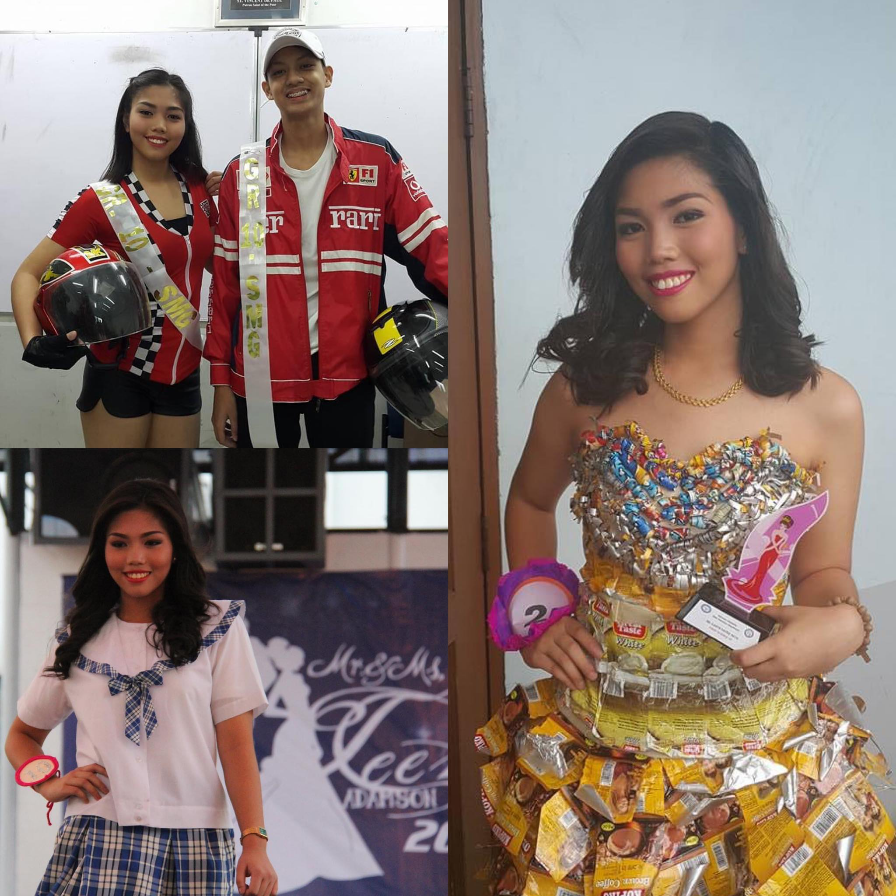
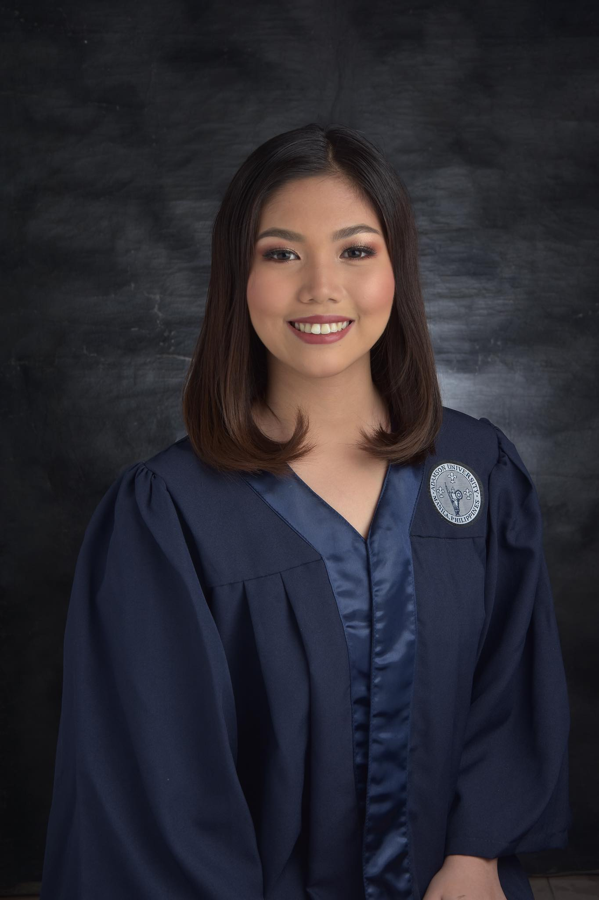
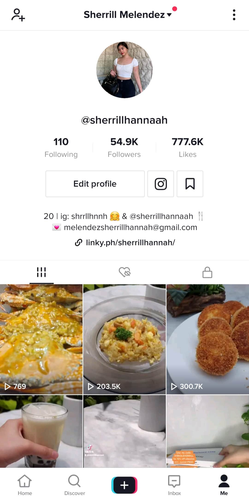
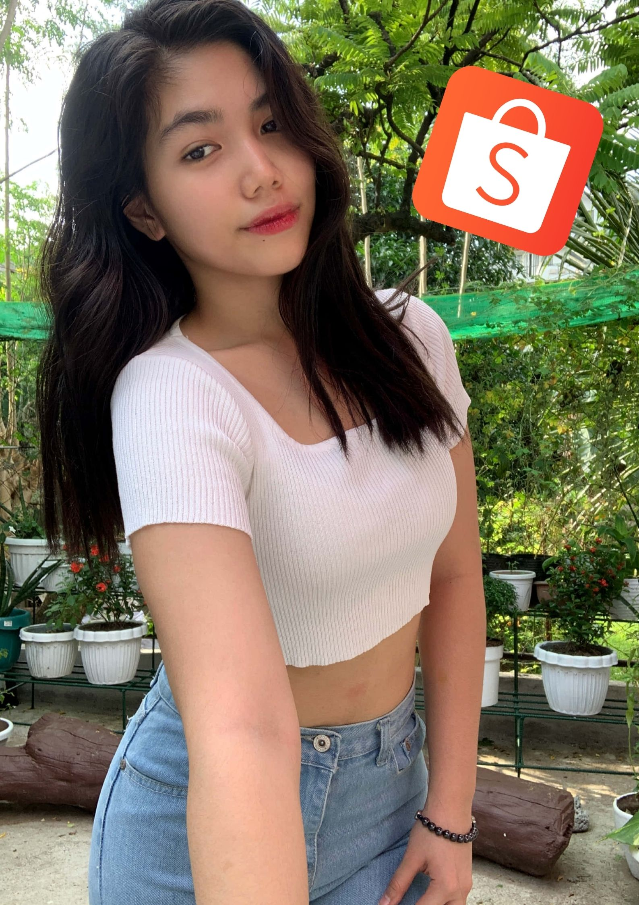

Sherrill Hannah B. Melendez is my full name but my friends usually call me "She".1 I was born in Capitol Medical Center in Quezon City on December 7, 2000.2 I am the youngest daughter of Herbert V. Melendez Jr. and Jeanett B. Melendez.3 I have an older sister named Stephanie Herjay B. Melendez.4 My sister is my first best friend.5 She always cares for me whenever our parents is not at home.6 When we were a child, both love to play, dance and swim.7 She is also the one who defends me when someone on our school bullied me.8 Up until now I can count here on anything.9 She's the one who always gives me the best advices.10 I thank God because he gave me the loving and caring sister ever.11
I'll never forget when I was in my preparatory days, I usually hate my name because for me, it was very long.12 One day, I decided to ask my parents where they got my name and then they told me that my names have meanings.13 My name 'Sherrill' means beautiful meadow and 'Hannah' in Hebrew means "God's blessing".14 After I knew the meanings of my names, I thank my parents because they gave me the best names with wonderful meanings.15
I have so many hobbies but Cooking is what I enjoy the most.16 I was only 8 years old when I first learned how to cook.17 The first dish that I served to my family is my Mom's recipe of Spaghetti, but now I have my own.18 Since then, I love putting twists into common dishes.19 On my grade-school days, I studied at Santa Isabel College - Manila.20 In my six years of stay at this school, I have learned so many things that I will forever treasure.21
My home is in Heaven. I'm just traveling through this world.
- Billy Graham
Go Top
I can describe myself as an outgoing type of person.1 I can easily find a new friend.2 I think this personality helped me a lot when I transferred to Adamson University to take up my high school degree.3 For me it's because I am not a shy type of person.4 I met so many friends there that turned into family.5 My friends usually describe me as a person who doesn't have a problem but I think it's because I am an optimistic type of person.6 I always find positivity out of everything.7
Adamson University has a special place in my heart.8 I've stayed there for about six years, from Junior High School to Senior High School.9 This school opened a lot of opportunities that came in to my life.10 There are countless happy memories that happened in my previous school but the one that I will never forget is when my teacher forced me to join the Miss Teen Adamson 2015.11 It was definitely my first time to join a pageant but I managed to pass the eliminations round and made it to top 6 out of 40 girls who also joined the pageant.12
Even though I didn't got the crown, it is still the most unforgettable thing that happened to me because this pageant helped me to boost my confidence.13 After that pageant, I also joined the Miss Adamson Earth Saver where I got the crown and Miss Intramurals where I placed as 2nd runner up.14 Joining pageants are fun for me because aside from gaining my confidence, I meet new friends, I learned how to act like a true beauty queen and it made me realize that I am capable of joining pageants.15
On my Senior High School years, I stopped joining pageants and I focused more on my studies.16 I finished the strand HUMSS because my first choice in college is AB Mass Communication.17 Ever since I was a child, being a news reporter is one of my dream job when I grow up.18 I was one of the top students in our class.19 I really love and enjoy our subjects and it made me become more inspired to be a newscaster someday.20
Aside from all of these, Adamson University is unforgettable for me because this is also the place where I met my current boyfriend and we're about to celebrate our 6th anniversary this year.21 Our relationship may not be perfect but I think we are secure enough to face different challenges that strengthens our relationship.22

Don't stop chasing your dreams because dreams do come true.
- Sachin Tendulkar
Go Top
To be honest, when I was in my Senior High School days, I was very nervous whenever I think what I am going to take up in college.1 My first choice before was AB mass Communication but I am quite unsure on what job I might end up if I did not became a reporter.2 So I decided to take up my second choice which is the BS Computer Science.3 I was highly influenced by my sister since she finished the course BS Computer Science way back in 2018 in the same school as mine now which is the University of the East - Manila.4 Yup, I decided to transfer to UE - Manila because I wanted a new environment when I entered college.5
 As usual, I gained a lot of friends ever since the first day of college.6 I find my college life full of fun and challenges because of my subjects.7 I don't have any regrets in nottaking up my dream course because I find myself enjoying every programming languages that we have studied and I gained new friends that became family for me.8 I finally love my course and I am always thankful to my sister because she helped me in choosing this course.9
As usual, I gained a lot of friends ever since the first day of college.6 I find my college life full of fun and challenges because of my subjects.7 I don't have any regrets in nottaking up my dream course because I find myself enjoying every programming languages that we have studied and I gained new friends that became family for me.8 I finally love my course and I am always thankful to my sister because she helped me in choosing this course.9
Last year, the strike of Covid-19 came across the world and it was announced by WHO as a Pandemic.10 It was very sad because suddenly our class have stopped and lockdowns were implemented around our country.11 Out of boredom I decided to upload a video where I cooked one of my favorite dish which is the Creamy Beef with Mushroom.12 It was only for fun and I don't have any expectations that it will become viral.13 I was so shocked that when after I uploaded the video, I looked at the views it goes high every hour and in less than a day, I gained 800k views on Tiktok.14 Now, it has 1.4 million views on Tiktok.15 After that video, I decided to upload more of my recipes since a lot of people are giving comments on my videos saying that I should share more of my recipes.16 Tiktok opened a lot of opportunities for me that I can never ever imagine that will happen to my life.17 There are brands reaching out to me for them to be featured on my videos.18
The one that I will never forget on my Tiktok journey is that Shopee even contacted me to be one of their Brand Ambassadors.19 I was so kilig because I am a huge fan of Shopee and I love to buy different things from Shopee.20 Through these, I could save enough money for my future and somehow help my parents in our bills.21 Until now, I still can't believe that it happened to my life and I thank God everyday because out of all the sad things that this pandemic had brought into my life, he still gave me more than what I need.22
Go Top
Faith in God includes faith in his timing.- Neal Maxwell